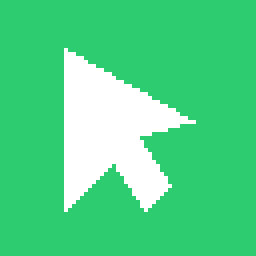
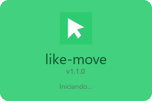
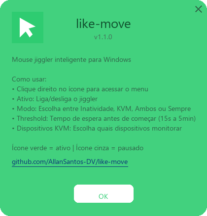

O like-move mantém o Windows acordado com um movimento imperceptível do mouse — e só quando você quer: em casa, no trabalho ou atrás de um KVM. Em Wi-Fi público, deixa a tela bloquear.
Só APIs Win32 via ctypes. Sem serviços, sem dependências nativas, sem admin.
Inatividade, KVM, Ambos ou Sempre — você escolhe quando o jiggle acontece.
Reage ao evento WM_DEVICECHANGE do Windows. Zero CPU ociosa esperando.
Acorda só nas suas redes (SSID + BSSID). Em Wi-Fi público, a tela bloqueia.
Verifica novas versões no GitHub e troca o próprio .exe.
Não faz jiggle à toa quando o Windows já está no Secure Desktop.
Opção sem admin, via registro do usuário (HKCU).
Suas preferências ficam salvas entre reinícios, em %APPDATA%.
Um passo de +1px e volta. Imperceptível — reseta o timer do Windows.
Deixar a tela bloquear é uma defesa. Num café ou aeroporto, manter a máquina acordada é convite para acesso indevido. O like-move reconhece a rede pelo nome e pelo endereço do ponto de acesso — então uma rede falsa com o mesmo nome não engana o app.
Cada capacidade mapeada para a API nativa que a implementa — sem pywin32, sem netsh.
+1px e volta: imperceptível, reseta o timer de inatividade..exe para o auto-update.Nada de mockup: estas imagens são renderizadas pelo like-move em código (Pillow + Win32).

🟢 Ativo

Um único .exe, sem Python, sem admin. O ícone aparece na bandeja e pronto.